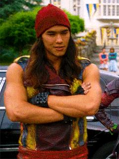

JAY
Na Ilha dos Perdidos, Jay é conhecido por roubar objetos para a loja de quinquilharias de seu pai, Jafar. Ele aparece pela primeira vez fazendo bagunça nas ruas da Ilha. Mais tarde, ele aparece surpreso com a notícia de que vai para Auradon. Na limusine, ele tenta roubar vários objetos, mais é impedido pela Fada Madrinha. Ele também tenta flertar com Audrey, que sorri para sua atitude. Mais tarde, ele tenta capturar a Varinha Mágica que esta em um museu, mais acaba soando o alarme. No outro dia, ele é selecionado junto com Carlos para jogar um esporte chamado Torneio. Embora ele seja muito bruto, o treinador considera que ele pode ser um excelente jogador. Ele se torna animado quando ganha a camiseta do time.
